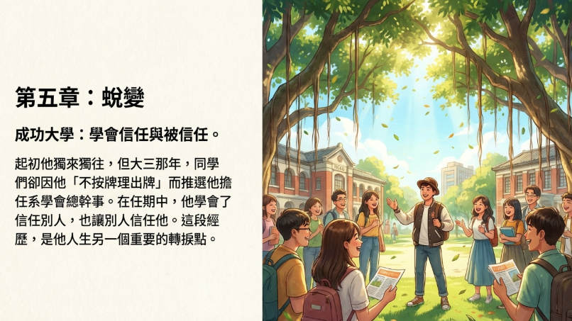

財哥
下方影片 請點一下,等一下~
社區的時代風華：博愛新村的故事.mp4
博愛新村的記憶拼圖：
致那些年，我們的歲月靜好
夜色溫柔，像母親的手，輕撫著新店博愛新村每一條熟悉的街巷。財哥坐在那扇見證了三十年風雨的家門口，手中的茶杯還冒著熱氣，蒸騰的水氣模糊了眼鏡，也模糊了時光的界線。眼前的街景，在這片朦朧中，彷彿回到了三十年前——那個他意氣風發、懷著滿腔熱血踏進調查局的青春年代。如今歲月在他臉上刻下深深淺淺的印記，但那份對這片土地的眷戀，卻愈發濃烈，如陳年老酒，愈久愈香。
「那時候，這裡很特別，從沒看過廣告在賣，但就是賣給了公務員。」財哥的聲音裡帶著一絲驕傲，更多的是不捨。他閉上眼睛，彷彿還能聽見當年和太太為了湊那兩萬塊錢標會時的忙碌聲響。兩百多萬買下的不只是一間房子，更是一個家的開始，一個夢想的起點。那時候的鄰居們，大多是和他一樣的警察或調查局同事，大家都有著相似的背景，相同的信念，就像一個大家族般緊密相連。
從舊時光影到今昔對望
時光是個魔術師，悄悄地變換著這裡的容顏。財哥記得最清楚的，是那些「拆」的日子。他親眼看著社區從簡陋的鐵皮屋，一點一點地長高，長大，變成今天的模樣。每一次改建，都像是在翻閱一本厚重的相冊，翻過一頁，就是一段歲月。
「以前這裡有芒果樹，有龍眼樹，幾個外省女孩還會爬上去玩耍。」他指著那塊如今被規劃成公園的空地，眼中閃爍著光芒。那些樹下的笑聲，那些天真無邪的臉龐，如今都成了心中最珍貴的寶藏。他想起隔壁那位姓賀的警官，脾氣雖然火爆，看到鐵架子擺在外面就會大聲喝斥，但每當鄰居有困難時，總是第一個站出來幫忙。那種不善言辭卻溫暖如火的情誼，在這個越來越冷漠的世界裡，顯得格外珍貴。
這條路很窄，窄得連消防車都擠不進來。財哥永遠忘不了那次
博愛街警察宿舍失火
的夜晚，風很大，火舌像惡魔般張牙舞爪，眼看就要燒到這邊來。他二話不說抓起水管就衝了上去，和鄰居們一起拼命救火。那一刻，什麼都不重要了，重要的是守護這個家，守護這些一起生活了這麼多年的鄰居們。那驚心動魄的夜晚，如今想來，心中湧起的不是恐懼，而是滿滿的感動——為了這份患難見真情的鄰里情。
不變的眷戀
時間是最無情的小偷，悄悄地偷走了太多美好。這幾年，財哥看著老鄰居們一個個地離開，心中總是五味雜陳。有的遠赴美國，因為女兒嫁給了異國的愛情；有的與世長辭，留下空蕩蕩的房子和滿滿的回憶。每一次告別，都像是心上被輕輕撕去一角，疼痛卻又不捨。
他特別記得湯先生，人在美國多年，卻始終不願賣掉這裡的房子，寧可租給別人。那份對故土的眷戀，對舊時光的不捨，財哥太能理解了。因為這裡不只是房子，更是青春的見證，是記憶的港灣。
「我們這代的鄰居，年紀都差不多。」財哥
從當年一起在這裡安家落戶的年輕夫妻，到如今兒女滿堂、各自天涯的花甲老人，這一路走來的酸甜苦辣，只有彼此最懂。前些日子，鄰居傳給他一張泛黃的舊照片，是當年四層樓房子剛蓋好時的模樣。看著那張照片，他的
百感交集
，那不只是一張照片，更是他們共同青春的證明。
如今，公辦都更的消息傳來，新舊交替的輪迴又要開始了。那些陪伴了他大半輩子的鐵皮屋，那些見證過孩子們嬉戲的龍眼樹，都將成為歷史的塵埃。但財哥知道，真正重要的東西，是拆不掉的。
這片土地給了他的，遠比一處住所更多——它是他青春的舞台，是他家庭的搖籃，是他與這群如家人般鄰居們共同編織的溫暖回憶。這些珍貴的片段，如同心靈深處最亮的星光，永遠指引著回家的路。
縱然舊景將逝，但那些深深烙印在心底的溫情，那些用歲月沉澱下來的真摯情感，將永遠在記憶的花園裡綻放，成為這片土地上最動人的詩篇，也是他們這一代人最珍貴的遺產。
——仿鄭愁予《錯誤》
我從調查局走過 那等在歲月裡的容顏如芒果花的開落
都更不來，三十年的鐵皮屋不拆 你底心如小小的寂寞的村 恰若狹窄的巷弄向晚 蟲鳴不響，三月的春帷不揭 你底心是小小的窗扉緊掩
我沉沉的腳步是美麗的錯誤 我不是過客，是個歸人……
變奏：
我從新店走過 那等在門口裡的茶香如龍眼花的開落
時光不停，四十年的記憶不散 你底心如小小的溫暖的家 恰若泛黃的照片向晚 話語不盡，往昔的情意不絕 你底心是小小的港灣長開
我達達的心跳是美麗的眷戀 我不是過客，是個守望者……
三變：
我從火光走過 那燃在夜裡的危險如業火的開落
消防車不來，狹窄的巷弄不寬 你底心如小小的緊張的城 恰若賀警官的喝斥向晚 水聲不停，鄰里的真情不熄 你底心是小小的勇氣長燃
我急急的水管是美麗的守護 我不是旁觀，是個救火者……
終章：
我從時光走過 那等在記憶裡的溫情如櫻
的開落
拆遷將至，百年的樹影不移 我底心如小小的不捨的村 恰若青春的歲月向晚 鐘聲不響，昨日的歡聲不散 我底心是小小的寶藏深埋
歲月深深的印記是美麗的恩賜 我不是過客，永遠是歸人……
——仿鄭愁予《鄉愁》
年少時
鄉愁是一張標會的收據
我在這頭 夢想在那頭
青年時
鄉愁是一棵芒果樹
孩子們在樹下 我在樹上
中年時
鄉愁是早出晚歸的腳步聲
事業在那頭 孩子在這頭
現在啊
鄉愁是一張泛黃的舊照片
老鄰居在那頭 我在這頭
三十年前
財哥是一枚調查局的新章 蓋在博愛新村的公文上
熱血、青春、滿腔理想
二十年前
財哥是一根救火的水管 連接著鄰里的溫情 也連接著患難見真情的歲月
十年前
財哥是一面見證的鏡子 映照著「拆」字的滄桑 也映照著改建的希望
現在
財哥是一杯還冒著熱氣的茶 溫暖著夜色中的回憶 也溫暖著即將告別的心
永恆的歸宿
博愛新村啊博愛新村 你是我青春的標點符號 逗號是初來時的忙碌 句號是安家時的滿足 省略號是歲月的流逝 驚嘆號是患難時的真情
而現在 都更的消息如問號般到來 但我知道 真正的答案 不在新樓的藍圖裡 而在這些 拆不掉的溫暖記憶中
財哥專訪
文字PODCAST
歡迎收聽這次的深入探索。今天我們手上有一份很有意思的訪談記錄，來自新店仁愛里，主角是一位在社區住了幾十年的財哥。
這份記錄就像一個時光膠囊，讓我們可以透過財哥的眼睛來看看一個地方——那種我們可能有點熟悉，但又不完全了解的地方——是怎麼一點一點變成現在這個樣子的。
我們的任務就是從他的回憶裡挖掘出這個社區的變遷軌跡，還有居民們那些獨特的故事，那些生活裡的小事、生活氣息。準備好一起來聽故事了嗎？
這份訪談的價值在於個人視角。它不只是記錄哪個房子蓋了、哪個拆了，更捕捉到個人記憶怎麼跟大的時代背景交織在一起。像是都市發展，或是某個特定職業的人搬過來，這些因素怎麼互動？我們可以從中觀察到一個社區的「性格」是怎麼被塑造出來的。
初來乍到：選擇這個地方的偶然
好，那我們就從財哥跟他太太搬來這裡的時候開始說起。他們是怎麼選到這個地方的？聽起來過程好像挺有偶然性的。他太太後來甚至還當了鄰長呢！
這個很有趣，訪談提到他太太後來當了鄰長。
至於買房那個過程，確實不是我們現在習慣的看廣告、找仲介那種方式。根據財哥的回憶，是那個房子原屋主的媽媽認識他太太，就在聊天過程中聊到他們需要房子，就這樣牽上線了。而且他還提到，這兩棟樓好像從來沒看過賣房子的廣告，買賣大部分都是靠熟人介紹。這在當年可能不稀奇，但現在來看真的很有人情味。
這種靠口耳相傳的交易方式，感覺真的是早期社會的一個縮影。不過財哥當時居然形容這裡是「偏僻的地方」，這就讓人好奇，大概40年前這裡跟現在的樣子落差有多大？
社區的特殊性格：公務員聚落
這個點很重要，他其實點出了很多新興社區在發展初期會有的現象。很多現在看起來機能很好的區域，一開始開發的時候都會給人很偏遠、交通不太方便的印象。
財哥有提到，他們剛搬來的時候，這裡可能還不像現在這麼熱鬧，基礎設施什麼的可能也都還在慢慢蓋。這種從無到有的過程，其實就是都市擴張的一個見證。
那在這樣一個慢慢發展起來的社區裡，住的都是些什麼樣的人呢？財哥特別講到這裡的住戶有一個很明顯的共同點——很多都是公務人員。
這是訪談裡一個非常重要的線索。他好幾次提到鄰居是從警局的、調查局的、考試院、交通部，就是這些公家機關來的。甚至他自己，他說他當年也是因為想當公務人員，覺得比較穩定（鐵飯碗），才選擇加入調查局的。
這很可能跟當時政府為了解決公務員的居住需求，有一些住宅政策或是宿舍分配有關。所以這不完全是大家自己選的，而是有點政策引導的感覺。
可以這麼說，訪談裡有提到他們這邊70戶裡面，大概有七到八
是透過服務單位分配來的。比例還不低呢！這就解釋了為什麼某個特定職業的人會集中住在這裡，這也讓我們想到，早期的社區規劃有時候是帶有某種社會功能性的。
鄰里故事：既熟悉又陌生的關係
有了這個背景，再來看他分享的那些鄰居故事就更有意思了。像是他說有人移民去美國、有人後來當上證交所總經理、還有提到以前的老警察好像比較嚴肅，這些零零散散的片段就拼出一個社區的人文風景。
這些故事雖然零散，可是很真實。比方說他提到隔壁鄰居對他們家想要在外牆加裝鐵架有意見，還找了管理員來協調。這種事很常發生，就反映了鄰居之間可能因為生活習慣或是對空間使用的看法不一樣，會產生一些小摩擦。
另外他提到有些鄰居是警官學校或是警大畢業的，這個或許也暗示了社區內部就算都是公務體系，可能還是有不同的資歷或是階級背景存在。
不過有趣的是，財哥也很直接地說鄰居之間其實不是很熟，跟那種傳統鄉下大家會常常串門聊天好像不太一樣。這跟我原本想的「同質性這麼高的社區應該很緊密吧」有點不一樣。
這點值得思考。可能有幾個原因：
第一，這可能反映了都市化帶來的生活模式轉變。就算住在隔壁，人際關係也可能比較獨立，保持一點距離。
第二，公務人員那種規律的作息，可能大家下班回家就比較傾向家庭生活，而不是跟鄰居社交。
空間跟生活形態真的會影響人跟人的互動。
變遷的關鍵詞：「拆」
那在這40年的居住期間，財哥觀察到最大的變化是什麼？他嘴裡一直出現那個「拆」字，這好像是個關鍵詞。
沒錯，「拆」這個字幾乎是貫穿了整個變遷的敘事。而且這個「拆」不只是物理上的拆，它也象徵著一個舊世代的結束跟新的開始。
訪談裡提到各種拆建，像是有人在外牆加蓋鐵皮、甚至發生被人家惡意破壞的衝突，還有像是有人房子蓋一半就停工了。然後樓高限制從以前很嚴格（比如說不能超過180公分——180公分這麼矮！），到後來慢慢放寬。
除了市場，還有一些老舊宿舍的拆除改建，這些都是一直在發生的變化，都反映了都市更新的壓力跟需求。
地景的變化
除了建築物本身，他還提到一些街道、地景的變化。路變大了！還有公園裡以前有龍眼樹，甚至有人在那邊放沖天炮。
這些細節就讓那個歷史場景活過來了。他提到旁邊的瑠公圳——瑠公圳是一條對早期台北盆地灌溉很重要的水圳，雖然現在可能都加蓋了或改了。還有一些特定的巷弄，像97巷、11巷什麼的，一貫道的佛堂，還有到現在還在的老孫涼麵、大胖水果店。
這些地標有些還在、有些消失了，本身就在說故事。聽起來這些變化不只是地圖上的線條改一改，而是整個生活經驗的轉變。
還有像是火災的記憶，他說那個海天公寓附近失火，因為巷子太窄，消防車進不去。那一定很驚險，這可能是早期社區普遍會有的問題——巷道太窄。這會影響到公共安全還有救災的效率。
這也連帶提到一些水利的問題，像是水溝要定期清、排水系統要改善等等。這些聽起來好像很瑣碎，但其實都是居民最關心的日常問題，也反映了基礎設施怎麼隨著社區發展一步一步提升。
房價變遷的震撼
從各個方面來看，這40年的變化真的很劇烈。回到住的部分，他們買房子的故事本身就很有代表性。剛剛提到是熟人介紹，而且那個房價的變化幅度聽起來非常驚人。
這段確實是時代的縮影。從最早可能是透過單位補助或是用比較便宜的價格買到——他提到當時月薪可能不到1萬8，然後貸款40萬，自備款幾萬塊——這反映了早期公務員的薪水還有當時的房價水平。
然後隨著台灣經濟起飛，房價就一路漲，漲到6、7百萬，甚至有人開價到900多萬。天哪，幾萬塊變900多萬！這不只是數字的變化，它更折射出社會經濟結構、房地產市場的巨大變遷，還有買房子的壓力是怎麼隨著時代演進的。
他甚至還提到早期公務員相對是比較窮的，這跟我們現在對公務員那種「穩定收入、中上階層」的印象不太一樣。這就是歷史對照有趣的地方——不同年代公務人員這個身份對應的社經地位跟生活條件是會變的。
他也提到一些當時買房子的眉角，像是買法拍屋風險很高，他同事就勸他不要碰。還有為了爭取那個單位的房屋配售資格，家裡有小孩居然可以加分！真的假的？有小孩可以加分？聽起來很妙對不對？
所以當時買房子不只是錢的問題，還跟你的身份資格、人際關係，甚至一些不成文的規定有關。他說他自己因為住得比較遠，沒有分配到宿舍，加上家裡有小孩，這些因素加起來反而可能增加了他拿到配售的機會。
這就顯示了當時那個資源分配體系的一些運作邏輯，也反映了那種以家戶為單位的考量。
個人記憶與時代印記
除了房子這個硬體之外，財哥個人的經歷、心境變化也為這段歷史加了很多溫度。像是他當初為什麼想加入調查局，動機很單純，就是想找一份穩定的公務員工作。
這些個人故事裡面常常會不經意地流露出那個大時代的氛圍。他也提到有些外省族群經歷過的那種逃難的歲月，還有那種很怕跟親人失去聯繫的時代創傷。
這些背景都讓他的個人故事更有歷史的厚重感。還有他提到他太太以前在學校
工作過
，還有孩子們長大、成家立業的過程。這些聽起來很平凡的生活點滴，但其實就是一個家庭在這個社區落地深根、世代交替的證明。
展望未來：都更的十字路口
那麼回顧了這麼多過去跟現在，訪談的最後有沒有談到這個社區的未來展望呢？好像有提到都市更新的可能性。
訪談的最後面聚焦在公辦都更和社會住宅這個議題上。看起來政府的主管機關——內政部國土營建署都市更新中心——有一個比較大的規劃，打算把財哥他們社區周邊，包含一些國有地在內，相當大一片區域做一個整體的開發。
目標是蓋社會住宅，還有規劃公園綠地。這個影響很深遠。不過聽起來財哥他們住的這棟樓會不會被直接納入這個都更計劃，好像還是個未知數。
從訪談內容來判斷，他們這棟樓的住戶好像參與意願不是很高，或者說那個產權整合的難度比較大。所以被納入改建的可能性似乎不太大，訪談者也推測機會不高。
這其實就點出了都市更新普遍會面臨的挑戰——你要怎麼去協調這麼多私有產權所有人的意願？怎麼整合各方的意見？這是一個非常複雜的過程。
所以就算自己住的樓沒有要拆，周遭的環境在未來幾年也可能會有翻天覆地的變化。這對他們來說，又是另一種形式的變遷了。
正是如此，就算建築物本身沒變，可是周圍的都市紋理、社區樣貌，甚至生活機能都可能因為這種大型開發案而改變。這對老住戶來說可能帶來新的方便，但也可能衝擊到原本的生活習慣，還有對社區的認同感。
結語：時代的縮影
回顧整段訪談，我們真的透過財哥的眼睛看到了一個社區數十年來的縮影——從最早那種以公務和警務人員為主、相對單純的聚落，經歷了建築的拆建、人口的流動、房價的劇烈起伏，到現在又站在都市更新計劃的十字路口上。
這份記錄讓我們很深刻地體會到一個社區的氣質，或者說它的個性，是怎麼被它的居民組成、歷史的機遇（像是早期的配售政策），還有地理位置（從偏僻到核心），這些因素共同塑造出來的。
同時也看到個人的生活記憶跟那個宏觀的都市發展進程之間存在一種既緊密相依，但有時候又充滿張力的互動關係。
而且，其實像財哥說的，鄰居之間不一定很熱絡，但那種共同的、相似的生命經驗好像也形成了一種隱性的連接——一種特殊的社群感。可能不需要常常往來，但彼此都大概理解對方是來自一個相似的世界。
這份訪談確實提供了很豐富的層次，它不只是關於一個特定地點的故事而已，其實也映照出台灣社會數十年來的變遷軌跡。
聽完財哥的故事，您是不是也開始回想自己生活或成長的那個角落？那裡有過哪些讓你印象深刻的人事物，又經歷了怎麼樣的變化呢？
一個地方的靈魂究竟是藏在那些好像不會變的磚瓦上，還是流淌在居民們不斷述說、不斷傳承的記憶之中？
這也引導我們進一步去想，當我們的城市不斷追求更新、更有效率的發展的時候，我們要怎麼去傾聽、去記錄，並且尊重那些承載了地方情感跟集體記憶的空間，還有它們的故事。
真正的挑戰在於我們怎麼在推動進步的同時，也能夠很細膩地保護那些讓一個地方之所以獨特的無形價值。
語音PODCCAST
左下方為語音檔~點一下可收聽
與財哥對話四十年.m4a
Google Sites
Report abuse
Page details
Page updated
Google Sites
Report abuse
本頁珍貴影像與檔案
